class: center, middle # EE-362 ELECTROMECHANICAL ENERGY CONVERSION-II # Introduction to Synchronous Machines ## Ozan Keysan [keysan.me](http://keysan.me) Office: C-113 <span class="meta">•</span> Tel: 210 7586 --- # Review ## Rotating MMF generated by 3-phase winding <img src="http://www.ece.umn.edu/users/riaz/animations/sinwaves0.gif" alt="Drawing" style="width: 600px;"/> --- # Review ## Rotating MMF generated by 3-phase winding <img src="./images/ee362/vecmovieplus.gif" alt="Drawing" style="width: 850px;"/> --- # Fundamental Idea of all AC Machines ## Rotor tries to catch up with the rotating MMF ## (to reach to the minimum magnetic energy point). --- # Synchronous Machines ### Generates 90% of the world's electricity ### PMSMs (Permanent Magnet Synchronous Machines) are used by many electric car brands <img src="https://api.time.com/wp-content/uploads/2015/07/hoover-damn-hydropower.jpg" alt="Drawing" style="width: 400px;"/> #### Suggested Video: [Matrix Reloaded](https://youtu.be/Ny_mr3QX9Q8?t=91) --- # Synchronous Machines ## Armature: - ### 3-phase cylindrical stator. - ### Generates rotating MMF (ie moves the carrot) -- ## Rotor (Field Windings): - ### Either Salient Pole or Cylindrical Rotor - ### Excited with DC! - ### or can also have permanent magnets for excitation --- # Synchronous Machines: Rotor ## Rotor is excited with DC, becomes an electromagnet ## Needs two slip rings to carry to current to rotor 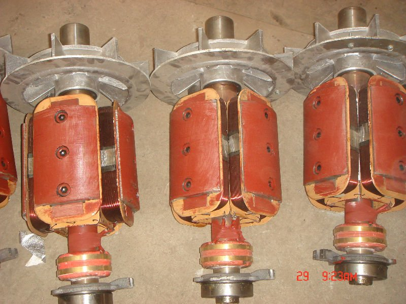 --- ## Theory of Operation: ### Stator winding create rotating MMF <img src="http://www.alternative-energy-tutorials.com/images/stories/wind/alt64.gif" alt="Drawing" style="width: 800px;"/> --- ## Theory of Operation ### Rotor MMF (DC) locks with stator MMF, and rotates at the synchronous speed <img src="http://www.simulation-research.com/help/userguide/em/bldcm/bldcm.gif" alt="Drawing" style="width: 300px;"/> ### A BLDC motor with concentrated stator windings --- ## Theory of Operation ### A smoother MMF distribution with distributed winding and AC excitation ### [Operation animation](https://youtu.be/Vk2jDXxZIhs?t=45s) --- # Stator of AC Machines 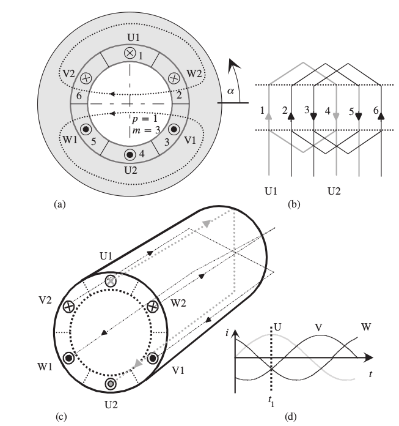 --- ## MMF from three phase 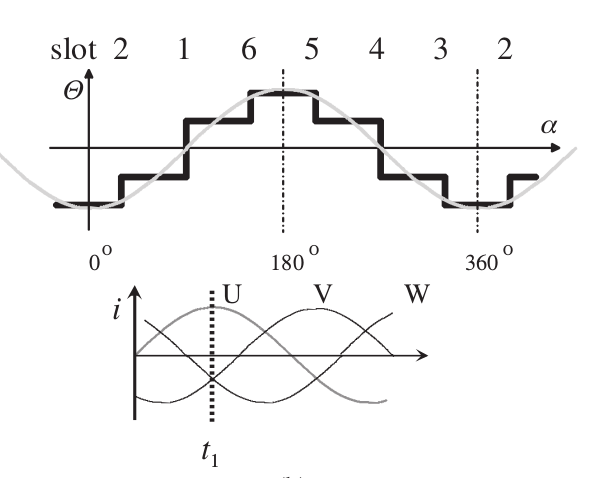 ### Number of coils can be increased to achieve a smoother MMF waveform. --- # Distributed Winding Manufacturing - ### [Production of electric machines](https://www.youtube.com/watch?v=5Mu42TzHy8M) (T=6:00) - ### [Rewinding a Large Motor](https://www.youtube.com/watch?v=_65mXQ-GNVM) (T=0:20) - ### [BMW Electric Motor - Drive](https://www.youtube.com/watch?v=Qktx5yx1Bjw) - ### [Induction Motors: Overhauling a Motor](https://www.youtube.com/watch?v=yPvYd03cKJU) ### For curious students: [EE568](http://keysan.me/ee568) --- # Synchronous Machines: Rotor # Cylindrical Rotor vs Salient Pole Rotor <img src="http://1.bp.blogspot.com/-abfAw-qVR6g/T9il-2u0-wI/AAAAAAAABo0/gg53eqWmfyg/s1600/stator.png" alt="Drawing" style="width: 700px;"/> --- # Cylindrical Rotor vs Salient Pole Rotor <img src="http://1.bp.blogspot.com/-y12ci3GcaX8/UQA1b3GLtFI/AAAAAAAAJXE/OlfQyz55J2M/s1600/Fig+2.2+AC+GENERATOR+ROTORS.jpg" alt="Drawing" style="width: 600px;"/> --- ## Cylindrical Rotor Synchronous Machines <img src="https://qph.fs.quoracdn.net/main-qimg-13775f5e4b960df38cd49857034127a0" alt="Drawing" style="width: 500px;"/> ### Airgap (and hence inductance) is more or less constant ### No reluctance torque (\\(\frac{d L(\theta)}{d\theta}=0 \\)) but there is still synchronous torque (\\(\frac{d M(\theta)}{d\theta}\\)) --- ## Cylindrical Rotor Synchronous Machines ### Used in high speed turbo-generators (2 or 4 poles) <img src="https://upload.wikimedia.org/wikipedia/commons/c/ca/Turbogenerator01.jpg" alt="Drawing" style="width: 500px;"/> ### [How a Gas Turbine Works](https://www.youtube.com/watch?v=zcWkEKNvqCA) --- # Salient Pole Rotor Synchronous Machines 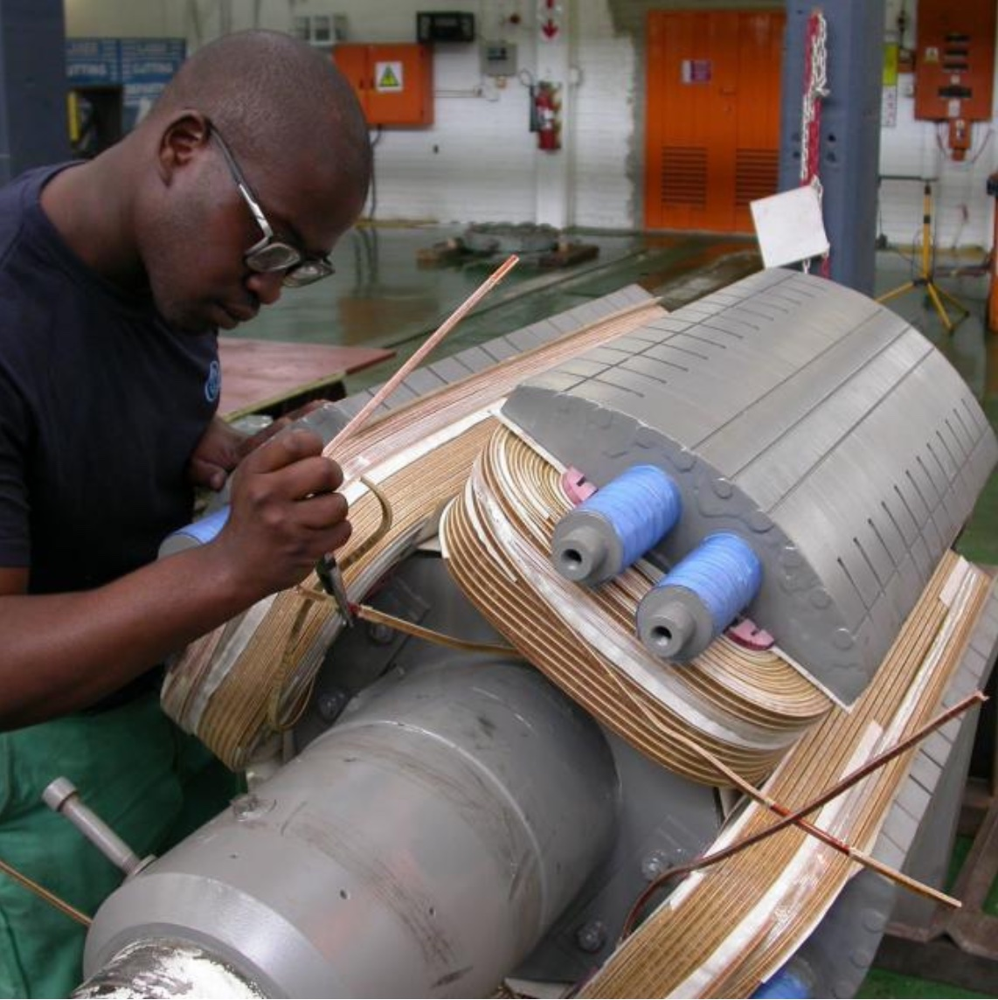 ### Airgap is not uniform. ### There are both reluctance and synchronous torque components --- # Salient Pole Rotor Synchronous Machines <img src="https://media.defense.gov/2017/Jun/20/2001766019/780/780/0/170619-A-EO110-007.JPG" alt="Drawing" style="width: 500px;"/> ## Used in large-pole low-speed generators (such as hydro-electric plants) --- ## Synchronous Machines are usually big machines -- <img src="https://s-media-cache-ak0.pinimg.com/originals/10/57/61/105761b3d7e7745c1f2fd82d70231739.jpg" alt="Drawing" style="width: 550px;"/> ### Direct-Drive Permanent-Magnet Synchronous Generator for Wind Turbines (Siemens) --- ## Synchronous Machines are usually big machines <img src="https://thumbs.dreamstime.com/z/steam-turbine-generator-side-10666670.jpg" alt="Drawing" style="width: 600px;"/> ### 2-pole 3000rpm Synchronous Generator (For Steam Turbines) --- ## Very Big -- <img src="./images/enercon.jpg" alt="Drawing" style="width: 350px;"/> ### Wind Turbine Synchronous Generator (12 rpm) --- # Very Very Big ### [Itaipu Hydro](http://en.wikipedia.org/wiki/Itaipu_Dam) Plant, Brazil 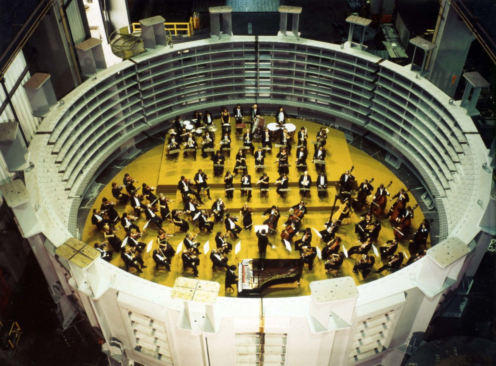 ### 20 Turbines, 700 MW each, [Shaft of The Generator](https://www.youtube.com/watch?v=rHSSURaeDLY) --- ## Very Very Big: [700 MW Synchronous Generator](https://www.itaipu.gov.br/en/energy/generating-units) <img src="https://raw.githubusercontent.com/ozank/ozank.github.io/master/presentations/images/itaipu_hydro.png" alt="Drawing" style="width: 360px;"/> ### 16 m diameter, 91 rpm, Rotor Mass: 2650 t --- # Even Bigger: [Three Gorges Dam](http://en.wikipedia.org/wiki/Three_Gorges_Dam), China -- <img src="https://i1.wp.com/image.slidesharecdn.com/threegorgesproject-150401000911-conversion-gate01/95/three-gorges-project-65-638.jpg?cb=1427847306" alt="Drawing" style="width: 450px;"/> #### Total Power Capacity: 22.5 GW (1/3 of Turkey's Consumption) #### Slowed down the rotation of earth by [0.06 microseconds](https://futurism.com/how-infamous-hydroelectric-dam-changed-earths-rotation/) [Video1](https://www.youtube.com/watch?v=sB6SwPHPEtQ), [Video2](https://www.youtube.com/watch?v=FUo8hrA0CEU), [Richard Feynman on Generators and Our Civilization](https://youtu.be/P1ww1IXRfTA?t=1351) --- ## Assume the stator is not excited, only the rotor is excited with DC. ### What is the shape of the induced voltage in the stator windings? -- <img src="http://www.alternative-energy-tutorials.com/images/stories/wind/alt64.gif" alt="Drawing" style="width: 800px;"/> --- ## i.e. the machine is working as a generator (no-load) -- 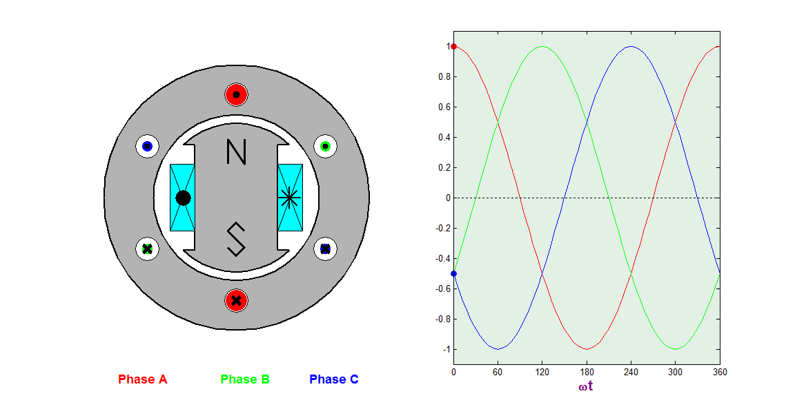 --- # Induced Voltage Magnitude Proportional to? -- ## Induced voltage \\(\propto\\) Field Current \\(\times\\) Frequency -- <img src="https://andymikeknight.github.io/machines/images/synch/prin/oc_test.jpg" alt="Drawing" style="width: 250px;"/> ### We would like to operate in the linear region, but beware of saturation & residual magnetism) --- ## Mechanical Rotation Frequency vs. Electrical Frequency -- ### The machine on the right induces a voltage twice the frequency of mechanical rotation frequency. <img src="https://raw.githubusercontent.com/ozank/ozank.github.io/master/presentations/images/2pole_4pole.png" alt="Drawing" style="width: 500px;"/> --- # Number of Poles: 2-pole machine <img src="https://raw.githubusercontent.com/ozank/ozank.github.io/master/presentations/images/2pole_mmf.jpg" alt="Drawing" style="width: 450px;"/> --- # Number of Poles: 4-pole machine <img src="https://raw.githubusercontent.com/ozank/ozank.github.io/master/presentations/images/4pole_mmf.jpg" alt="Drawing" style="width: 450px;"/> --- # How many poles does this machine has? <img src="https://voith.com/corp-en/m_VH_Budarhals_rotor.png" alt="Drawing" style="width: 500px;"/> -- ## What should be the rotational speed in RPM to induce 50 Hz voltage? --- ## Electrical Speed is not equal to Mechanical Speed! ## \\(\omega\_{elec} = (\dfrac{p}{2}) \omega\_{mech} \\) ## \\(p\\) : Number of poles (always an even number) ## \\(\dfrac{p}{2}\\) : Number of pole pairs # \\(\theta\_{elec} = (\dfrac{p}{2}) \theta\_{mech} \\) --- # Synchronous Machines ## Rotate only at synchronous speed! -- ## Synchronous Speed in RPM (revolutions per minute): # \\(n\_s = \dfrac{60 f\_{elec}}{(p/2)} = \dfrac{120 f\_{elec}}{p}\\) ## They are constant speed machines (under constant stator voltage frequency) --- ## A few videos to watch ### [Renault Zoe Synchronous Motor Manufacturing](https://www.youtube.com/watch?v=WSH983zUNIo) ### [Audi e-tron motor](https://youtu.be/uWBEPEspbWI?t=80) ### [Enercon Wind Turbine Generator](https://youtu.be/MgGk2WvK80M?t=409) ### [ABB Azipod Ship Propulsion Motor](https://youtu.be/lvHb4XTkC0A?t=71) ### [Siemens Turbo Generator](https://www.youtube.com/watch?v=g2AFCuJlH20) ### [Hydro Generator Manufacturing](https://www.youtube.com/watch?v=ccWl6F3mrZ8) --- # Equivalent Circuit of Synchronous Machines --- # Induced Voltage # Cause \\(\rightarrow\\)Effect -- ## \\(I\_{field(DC)}\\) -- \\(\rightarrow MMF\_{field}\\) -- \\(\rightarrow \Phi\_f \rightarrow\\) -- ## \\( e\_a,e\_b, e\_c\\) -- \\(\rightarrow I\_a,I\_b,I\_c\\) -- \\(\rightarrow MMF\_{armature} \\) -- ##\\(\rightarrow \Phi\_{ar} \\) -- ### Resultant MMF: ##\\(\Phi\_{R}= \Phi\_f + \Phi\_{ar}\\) --- # Armature Reaction ### The magnetic field created by the field winding is modified by the stator (armature) winding current. ### [Animation](https://andymikeknight.github.io/machines/synchronous/s_armature.html) --- # No Stator Current (No-load)  --- # Armature Reaction: Lagging Current  --- ## \\(B\_{ar}\\): Armature reaction flux density  --- ## \\(B\_{R}\\): Resultant flux density  --- # Torque in Synchronous Machines -- # \\(T = K \Phi\_f \Phi\_R sin (\delta)\\) -- ### \\(K\\): Constant (we'll see what it is in the following lectures) -- ### \\(\Phi_f\\): Field generated flux (rotor-side) -- ### \\(\Phi\_R\\): Resultant (or Air-gap) flux (\\(\Phi\_R = \Phi\_f + \Phi\_{ar}\\)) -- ## \\(\delta\\): Load-angle (very important!) --- # Torque vs Load Angle ## \\(\delta > 0 \\): Generating Action -- ## \\(\delta < 0 \\): Motoring Action -- ## \\(\delta = \pm \dfrac{\pi}{2} \\): Maximum torque point -- ## \\(\delta = 0 \\): Zero Torque (Donkey eats the carrot) --- # Torque vs Load Angle <img src="./images/synchronous_load_angle.png" alt="Drawing" style="width: 700px;"/> --- #Phasor Diagram ## \\(\vec{E\_{ar}}\;\\) lags \\(\;\vec{\Phi\_{ar}}\\) 90 degrees -- ### Armature reaction can be represented as a voltage drop in an inductance -- ## \\(\vec{E\_{ar}} = -j X\_{Q} \vec{I\_a}\\) -- ## \\(\vec{E\_{R}} = \vec{E\_{f}} -j X\_{Q} \vec{I\_a}\\) --- # Simple Equivalent Circuit ### Assumption: Cylindrical rotor (constant air-gap) -- <img src="./images/sync_simple_equivalent.png" alt="Drawing" style="width: 500px;"/> ### \\(\vec{E\_{R}} = \vec{E\_{f}} -j X\_{Q} \vec{I\_a}\\) --- # Simple Equivalent Circuit ## However, there is also the leakage flux: \\(\;jX\_{l}\\) -- ## Define stator total reactance as: # \\(jX\_S = jX_Q + jX_l\\) ### Thus, the equivalent circuit becomes: --- # Simple Equivalent Circuit 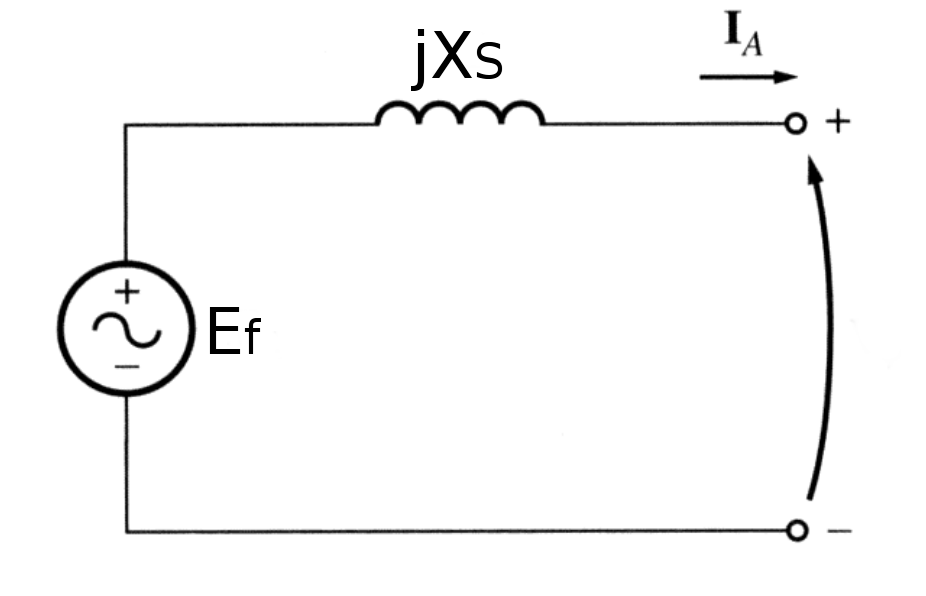 ## \\(\vec{E} = \vec{E\_{f}} -j X\_{s} \vec{I\_a}\\) --- ## What about the resistance of the phase windings? -- 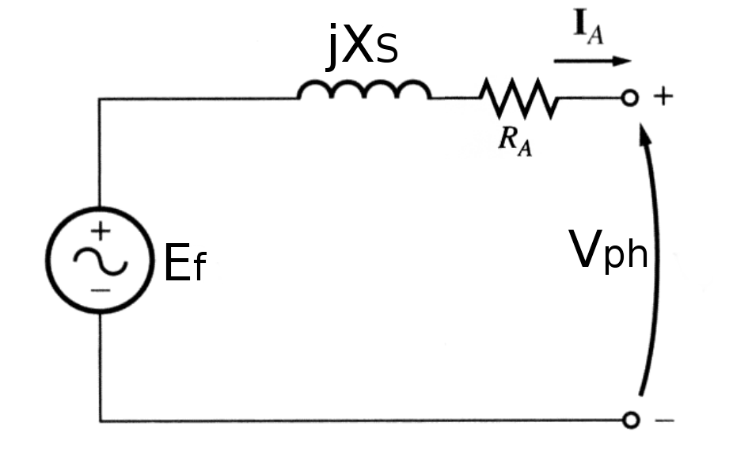 ## \\(\vec{V\_{ph}} = \vec{E\_{f}} -(j X\_{s}+R\_{a}) \vec{I\_a}\\) --- ## Motoring and Generating Convention ### Remember synchronous machines are mostly used as generators. 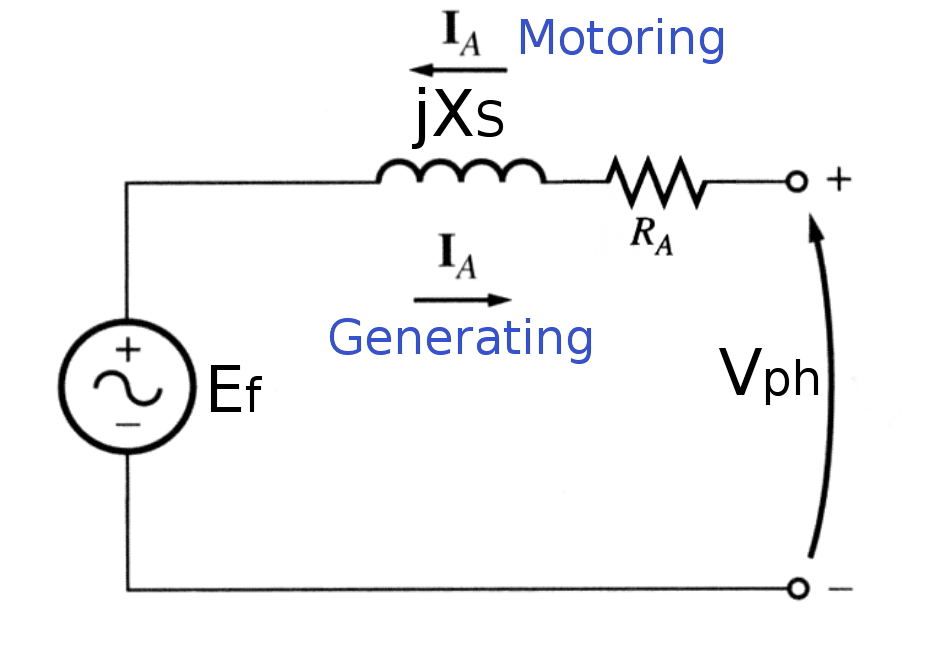 --- ## Remember the Equivalent Circuit is per Phase ### Synchronous machines can be Wye or Delta connected 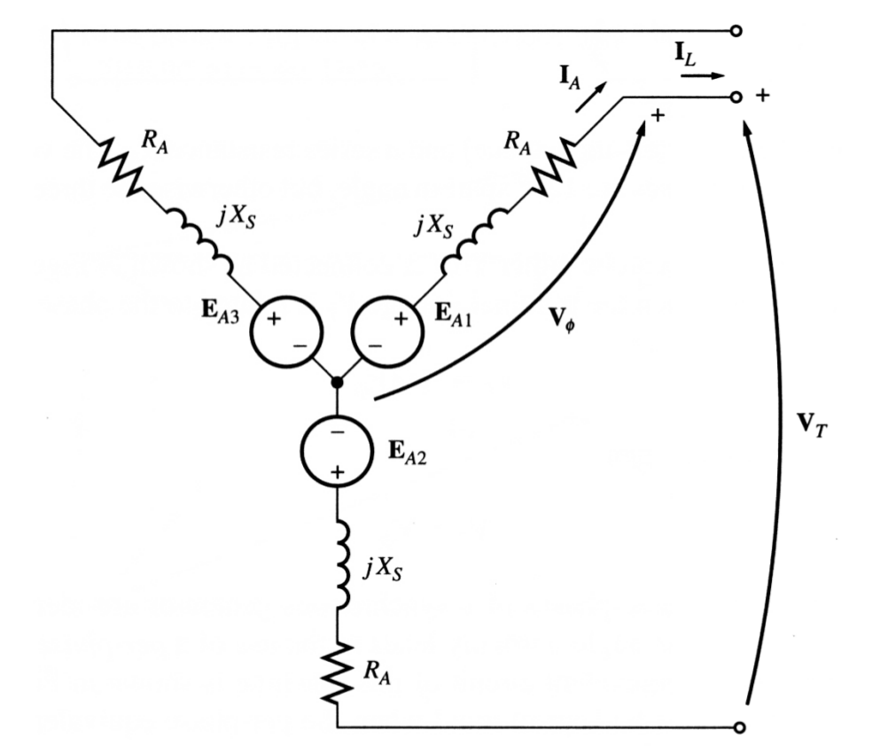 --- ## Remember the Equivalent Circuit is per Phase ### Synchronous machines can be Wye or Delta connected 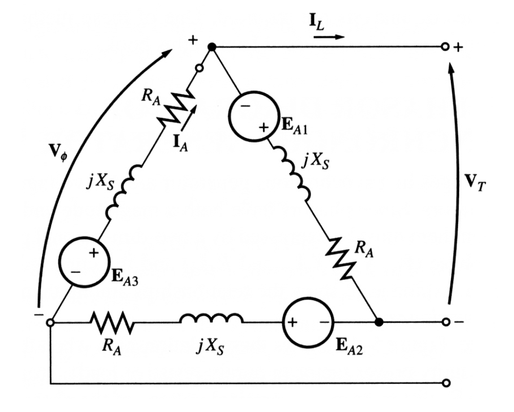 --- # Most important definitions - ## Load Angle (\\(\delta\\)): Angle between phase voltage and field voltage - ## Power Factor Angle (\\(\theta\\)): Angle between phase voltage and current. --- # Load Angle and Power Factor ## Neglect \\(R\_a\\) just for now. -- 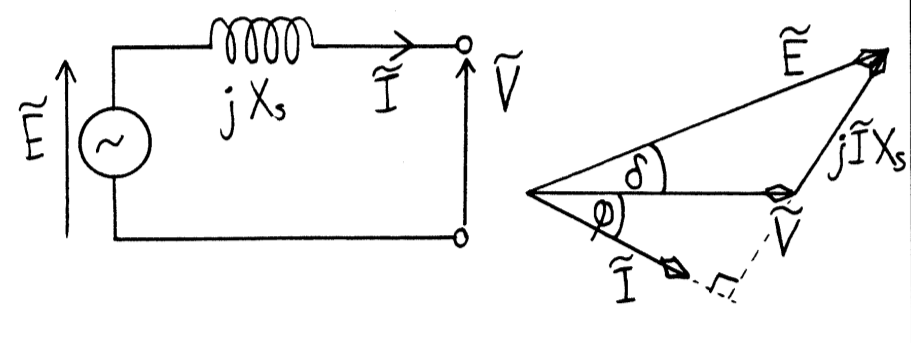 --- ## A few exercises with the simple equivalent circuit ## Neglect \\(R\_a\\) for now. --- ## A few exercises with the simple equivalent circuit --- # Full Equivalent Circuit with Field Circuit <img src="./images/synch_full_circuit.png" alt="Drawing" style="width: 800px;"/> ### \\(L\_f\\) can be neglected at steady state (DC) conditions ## Remember \\(I\_f\\) can be controlled to adjust \\(E\_f\\) --- ## That big generator is equivalent to: <img src="./images/enercon.jpg" alt="Drawing" style="width: 350px;"/> #### Enercon Wind Turbine Synchronous Generator (12 rpm) --- # Full Equivalent Circuit with Field Circuit <img src="./images/synch_full_circuit.png" alt="Drawing" style="width: 800px;"/> <!--- # What are these bars in the rotor for? <img src="https://www.physicsforums.com/attachments/synch_rotor-jpg.213780/" alt="Drawing" style="width: 600px;"/> # What are the bars in the rotor? <img src="https://www.physicsforums.com/attachments/synch_rotor-jpg.213780/" alt="Drawing" style="width: 400px;"/> ## Synchronous motors cannot self-start. ## Needs induction coils (Damper windings) --> --- ## You can download this presentation from: [keysan.me/ee362](http://keysan.me/ee362)